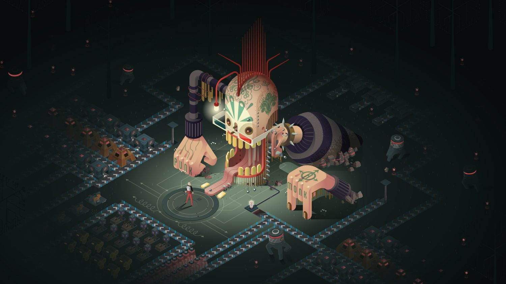

Lead Writer · IstoInc · 2019–2021
A survival-automation game about scarcity, light, and the people you build alongside. Commercially shipped on Steam.

Survival-automation games tend to leave story at the door. The genre rewards optimization; narrative usually shows up as a tutorial voice and then vanishes.
ApproachTreat the world as the protagonist. Build lore that hooks into the survival loop (light as scarce, hope as scarce) and a dialogue system that reacts to where players are in their automation, not just what they clicked.
OutcomeShipped on Steam to Mostly Positive reviews. The story was consistently the bright spot — praised even by reviewers who bounced off the mechanics. Branching dialogue tied to progression, environmental storytelling that rewards exploration, character relationships that evolve with the player's choices.
The world. Lore and thematic framework: a setting where light is currency and the dark is something you negotiate with.
The voices. Character dialogue, journals, and environmental writing. Each voice tuned to feel discovered, not delivered.
The system. Narrative prototyped in Twine, then implemented using Dialogue System for Unity. Story beats wired into automation milestones so progression and narrative move together.
Writing for Atrio was an iterative loop. I'd draft dialogue and narrative beats, review them with the game designer to check they were landing at the right emotional and mechanical moments, then build Twine prototypes to test with playtesters before anything went into implementation. Where players lost the thread, skipped text, or misread tone became the revision brief. That cycle (write, review, test, revise) drove most of the final shape of the narrative.